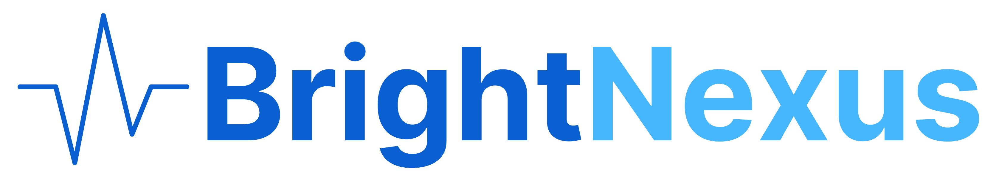
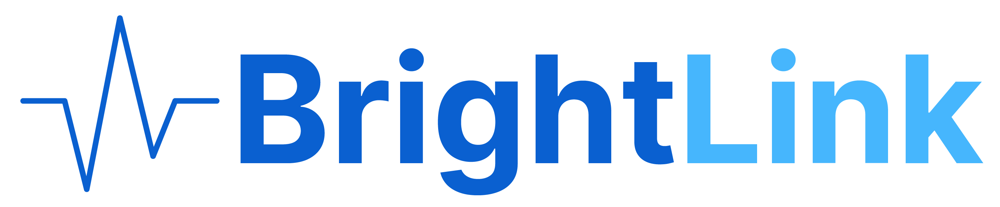

A Linux system-tray app that bridges Node.js and the BrightChain stack to the host TPM2 (or a software fallback), and hosts the BrightLink agent for the bsh shell. Hardware-backed P-256 signing, host-resident secp256k1 ECIES, TOTP-gated key export — all over a local Unix socket. Zero network surface.
BrightNexus for Linux is a GTK4 / libadwaita system-tray application for Ubuntu and other Linux desktops. It opens a single Unix domain socket in and serves two layered protocols on it:
The original Enclave Bridge wire surface, preserved byte-for-byte.
JSON-over-Unix-socket commands that proxy a curated subset of
cryptographic operations: ECDSA signing with a non-extractable
TPM2 P-256 key, ECIES decryption with a host-resident
secp256k1 key, optional TOTP-gated key export. Reference client is
@digitaldefiance/enclave-bridge-client.
Renamed from Enclave Bridge. This project was previously published as Enclave Bridge. The rename reflects the broader role: BrightLink agent + BrightChain hardware nexus, not just a single-purpose ECIES decrypt proxy. The EBP/1 wire surface is unchanged. Existing Node clients keep working — see the migration notes below.
The name
BrightNexus
is a nod to the concept of a unified "everything" where time and space
are no longer barriers. In the same way that our
BrightSpacetime
standard unifies [t, x, y, z] into a single 4D Cartesian
vector, the Nexus serves as the bridge between the legacy compute
environment and the secure, multidimensional filesystem of the future.
BrightLink over this bridge is what allows us to project meaningful, verified data from the secure enclave into the user's workspace — effectively "linking" reality into the digital stream.
The bridge is a small GTK4 app that lives in your system tray. It
opens an AF_UNIX socket under your home directory,
accepts concurrent client connections, and dispatches each accepted
file descriptor to its own DispatchQueue. The protocol
framing is plain UTF-8 JSON, one object per request, one per response.
Bridge P-256 identity — when TPM2 is available,
the signing key is generated inside the TPM with
Tpm2BridgeIdentity. Otherwise
FileBridgeIdentity stores a P-256 key under
libsecret or on disk (mode 0600). Signs with
ECDSA-SHA256 for EBP/1 and BrightLink transcripts.
Host-resident secp256k1 — 32 raw bytes at
~/.brightchain/brightnexus/ecies-privkey.bin (mode
0600). Used for ECIES decryption with AES-256-GCM
(12-byte IV, 16-byte tag) and HKDF-SHA256, byte-compatible with
@digitaldefiance/node-ecies-lib.
One per-user directory tree under ~/.brightchain/,
mode 0700 throughout:
For backward compatibility, BrightNexus also binds a secondary socket
at ~/.enclave/enclave-bridge.sock and routes traffic from
both into the same protocol handler. On first launch it migrates
ecies-privkey.bin and totp-config.json from
~/.enclave/ into
~/.brightchain/brightnexus/ via atomic
rename(2). Existing keys are preserved.
Every request is a JSON object with at least a cmd
field; every response is either a command-specific success object or
{"error":"<reason>"}. Binary fields (public keys,
signatures, ciphertexts) are standard Base64 with padding. There is no
length prefix and no newline delimiter — the server reads complete
JSON objects from the byte stream.
| Command | Purpose |
|---|---|
| HEARTBEAT | Liveness probe with timestamp |
| VERSION / INFO | App version, build, platform, uptime |
| STATUS | Peer-key flag, enclave availability |
| METRICS | Service uptime, reserved counters |
| GET_PUBLIC_KEY | Bridge's secp256k1 public key (for ECIES) |
| GET_ENCLAVE_PUBLIC_KEY | TPM2 P-256 public key |
| SET_PEER_PUBLIC_KEY | Cache a peer's secp256k1 public key on this connection |
| LIST_KEYS | Enumerate keys with TOTP status & fingerprints |
| ENCLAVE_SIGN | ECDSA-SHA256 over P-256 bridge identity (TPM2 or file-backed) |
| ENCLAVE_DECRYPT | ECIES decrypt with the bridge secp256k1 private key |
| ENCLAVE_GENERATE_KEY | Reserved (returns error in EBP/1) |
| ENCLAVE_ROTATE_KEY | Reserved (returns error in EBP/1) |
| ENABLE_TOTP | Enable per-key TOTP, emit provisioning URI |
| EXPORT_KEY | Export public key, gated by TOTP if enabled |
Full specification: Enclave Bridge Protocol (EBP/1).

BSH delivers structured credential payloads to BrightNexus over a Unix socket using BrightLink Protocol. The wire is JSON on a socket. Session establishment is an EBP/1 command pair on the same socket, encrypted under the bridge's persistent secp256k1 key and signed with the device's TPM2 P-256 key.
Status — two commands live, five reserved.
LINK_REGISTER (RFC §4.5) and
LINK_DELIVER (§4.6) are implemented. Captured
credentials surface in the menu-bar Credentials submenu and the
Dashboard "Credentials" view with click-to-copy and live TTL
countdowns. LINK_PUSH,
LINK_GEO_*, and LINK_AUDIT_EMIT are
reserved on the wire and ship in subsequent passes; an out-of-date
BrightNexus that does not know the BrightLink surface can be
distinguished from a BrightLink-aware one by the stable
"<COMMAND> not implemented in this build" error
string.
Client connects to the bridge socket, sends a 16-byte
clientNonce and an
ECIES
envelope addressed to the bridge's persistent secp256k1
public key. Plaintext carries an ephemeral secp256k1 public
key, a 32-byte clientShare, and a BrightDate
timestamp.
Bridge generates its own 32-byte
bridgeShare and a 16-byte
sessionId, returns them in an ECIES envelope
addressed to the client's ephemeral key. Both sides compute
K_session = HKDF-SHA256(IKM = clientShare ∥ bridgeShare,
salt = clientNonce ∥ sessionId, info =
"brightlink-session-key-v1", L = 32).
Bridge signs the canonical 238-byte transcript (literal prefix, lengths, nonces, shares, session ID, timestamps) with its TPM2 P-256 key. Client verifies against a TOFU-pinned bridge P-256 public key. A future impostor bridge cannot forge the signature without the hardware-backed identity.
Tools invoke
bsh-inject (or equivalent) to send a
LINK_DELIVER JSON request — {cmd,
counter, type, context, iv, ciphertext, authTag} —
on the same socket as the registration handshake. The
counter, type, and context are bound into the AES-256-GCM
AAD via a length-prefixed dir_tag, so a
captured ciphertext cannot be replayed in either direction.
Full v1 specification: BrightLink Protocol RFC. Companion paper: EBP/1. Cipher suite: DD-ECIES v1.0.
On Ubuntu, install the brightnexus package from
ppa:digitaldefiance/brightnexus (GTK system-tray app
plus headless brightnexus-bridge):
sudo add-apt-repository ppa:digitaldefiance/brightnexus
sudo apt update
sudo apt install brightnexus
Set BRIGHTNEXUS_REQUIRE_HARDWARE=1 to refuse starting
without a TPM2-backed bridge identity.
BrightNexus for Linux is a Rust workspace. Ubuntu 24.04+ with GTK4, libadwaita, and OpenSSL development packages is recommended.
git clone https://github.com/Digital-Defiance/BrightNexus-linux.git
cd BrightNexus-Linuxsudo apt install libssl-dev libsecp256k1-dev libgtk-4-dev libadwaita-1-dev libsecret-1-dev
cargo build --release -p brightnexus-gtk
cargo build --release -p brightnexus-bridge./target/release/brightnexus # system tray
./target/release/brightnexus-bridge # headless bridge onlyprintf '%s' '{"cmd":"HEARTBEAT"}' \
| nc -U ~/.brightchain/brightnexus/brightnexus.sock
The Linux port speaks the same EBP/1 + BrightLink JSON surface as the
macOS reference. Socket path, on-disk layout under
~/.brightchain/brightnexus/, and the Node client are
unchanged:
npm install @digitaldefiance/enclave-bridge-client
When TPM2 is available, the bridge P-256 private key is generated
inside the TPM. With FileBridgeIdentity, the key is
stored under libsecret or on disk (mode 0600).
ENCLAVE_SIGN and the BrightLink transcript signature
both pass through this key.
The host secp256k1 private key sits at rest under POSIX
0600 in your home directory. For defense in depth
(encrypted with a user password before being addressed to the
bridge), the
SecureEnclaveKeyring
consumer in brightchain-api-lib layers
password-AES-GCM and ECIES-to-the-bridge into a single
double-encrypted blob.
Any local process running as your user that can
connect(2) to the socket can issue any EBP/1 command
while the bridge is running. EXPORT_KEY can be gated
by RFC 6238 TOTP per key; ENCLAVE_SIGN and
ENCLAVE_DECRYPT are not gated by TOTP in EBP/1.
Quitting the menu-bar app revokes both capabilities until you
relaunch.
No network listeners. No telemetry. No third-party services. The bridge speaks only on a Unix domain socket inside your home directory, with filesystem permissions enforced by Linux.
For the BrightLink threat model see BrightLink RFC §14.
The zsh-compatible shell whose
bsh-inject builtin delivers BrightLink credentials
to BrightNexus over the EBP/1 socket. Tools speak directly to
the bridge — no terminal emulator participation, no PTY scraping.
site
·
source
TypeScript client for EBP/1. Drop-in replacement; package name unchanged across the rename. npm · source
The DD-ECIES wire format the bridge speaks for
ENCLAVE_DECRYPT and LINK_REGISTER:
secp256k1 + AES-256-GCM + HKDF-SHA256, byte-compatible across
languages.
npm
·
spec
The platform consuming BrightNexus. The
SecureEnclaveKeyring in
brightchain-api-lib
uses BrightNexus as its tier-1 key custody provider on Apple
Silicon.
source
The decimal-SI temporal foundation referenced by BrightLink transcript and payload timestamps. site
Replication-grade specification of the bridge's command surface, ECIES wire format, and bridge identity key custody. read it